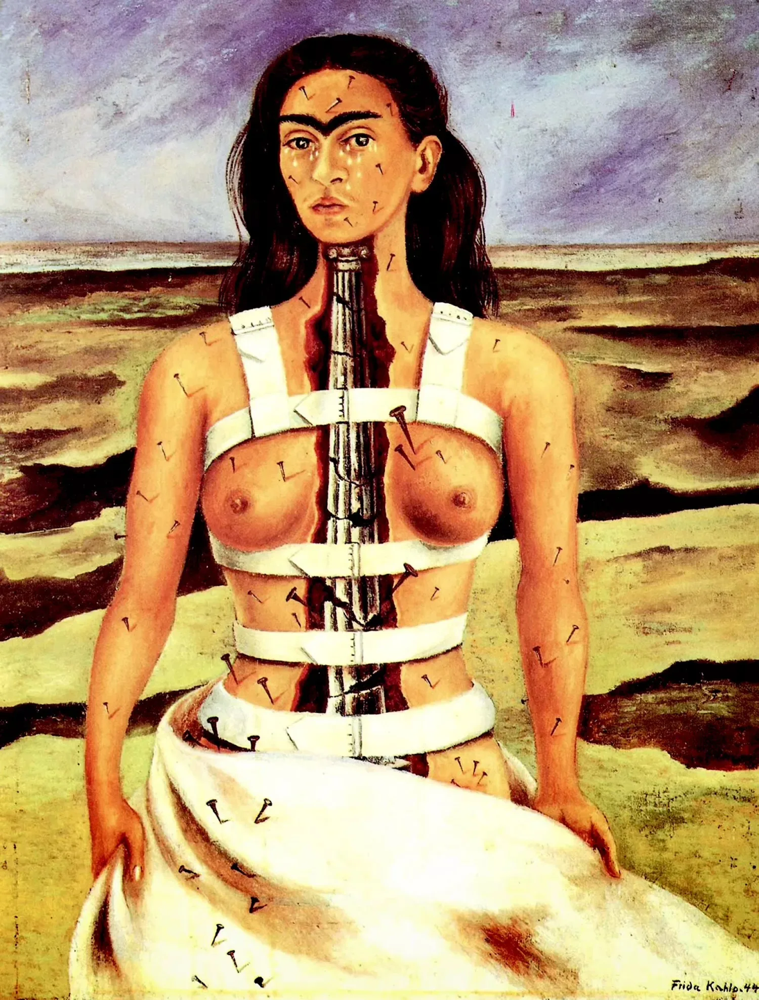

April 8, 2026

A patient comes with back pain. It has been going on for months. They have tried painkillers, exercises, even changed their mattress. Nothing helps. During the interview, a seemingly minor detail emerges: the pain started shortly after a difficult breakup. Or after the loss of someone close. Or after a period when they had to "hold it all together" for everyone around them.
This is the moment when I know the pain has its own history -- one that goes far beyond biomechanics.
Modern psychosomatics and polyvagal theory show us that the body is not merely a passive vessel. It actively participates in our emotional life. When we experience something overwhelming -- grief, betrayal, helplessness -- and cannot fully process it in the moment, the nervous system stores the charge in the body. Muscles tighten. Fascia contracts. Breathing becomes shallow. The body enters a state of chronic vigilance, even when the original threat has long passed.
Stephen Porges' polyvagal theory explains how the vagus nerve mediates our response to danger. When the system is overwhelmed, it can shift into a dorsal vagal state -- a kind of internal shutdown. Externally, the person may appear fine. Internally, their body is frozen in a protective pattern that manifests as chronic tension, pain or dysfunction.
In osteopathic practice, I often encounter these patterns. The body tells a coherent story if you know how to listen. A rigid diaphragm that won't release. A sacrum locked in a defensive position. Cranial rhythms that feel dampened or absent. These are not random mechanical faults -- they are the body's way of holding on to what was never fully expressed or released.
Somatic trauma work -- and this is where osteopathy intersects with the insights of Peter Levine and Bessel van der Kolk -- is about helping the body complete what it started. Not by forcing anything, but by creating the right conditions: safety, gentleness, precise touch. When the tissues feel safe enough, they begin to let go on their own. The patient may feel warmth, trembling, an emotional wave, or simply a deep sense of relief -- as if something that had been held for years finally found permission to move.
So does your pain have its own history? Very likely, yes. And recognizing that history is often the first step toward genuine, lasting change.